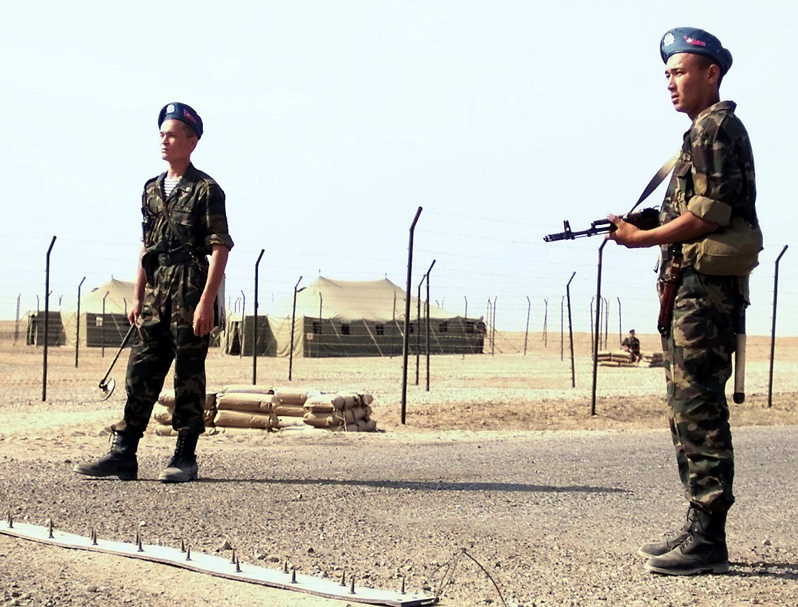

Атыс дайындығы Firearms Training Огневая подготовка
Жинау — бөлшектеуге КЕРІ ретпен жүргізіледі. Reassembly is done in the REVERSE order of disassembly. Сборка ведётся в ОБРАТНОМ порядке разборки.

Толық емес бөлшектеуден кейінгі жинау — автоматты толық емес бөлшектеуге кері ретпен қайта құрастырып, оны жұмысқа дайын күйге келтіру. Жинаудың мақсаты — әр бөлшекті өз орнына, дұрыс бағытта және соңына дейін бекіту. Сауатты жинау қарудың сенімді жұмысын қамтамасыз етеді, автоматиканың кідіріссіз жүруіне және атыс кезіндегі іркілістердің болмауына кепілдік береді. Reassembly after field-stripping is the process of putting the rifle back together in the order that is the reverse of field-stripping, bringing it to a ready-to-fire state. The goal is to seat every part in its correct location, in the correct orientation, and fully home. Sound reassembly guarantees reliable operation, smooth cycling of the action, and the absence of malfunctions during firing. Сборка после неполной разборки — приведение автомата в боеготовое состояние в порядке, обратном неполной разборке. Цель сборки — установить каждую деталь на своё место, в правильном положении и до конца. Грамотная сборка обеспечивает надёжную работу оружия, безотказное движение автоматики и отсутствие задержек при стрельбе.
Оқпан жапсырмасымен газ түтігіGas tube with handguardГазовая трубка со ствольной накладкой
Жапқыш және жапқыш жақтауыBolt and bolt carrierЗатвор и затворная рама
Кері қайтару механизмі (серіппе)Recoil mechanism (spring)Возвратный механизм (пружина)
Оқпан қорабының қақпағыReceiver coverКрышка ствольной коробки
Шомпол және пеналCleaning rod and accessory caseШомпол и пенал
ОқжатарMagazineМагазин
| ҚатеMistakeОшибка | СалдарыConsequenceПоследствие |
|---|---|
| Газ түтігі соңына дейін бекітілмегенGas tube not locked fully homeГазовая трубка не закреплена до конца | Газ кетеді, автоматика толық жүрмейді, іркілісGas leaks, the action short-cycles, stoppagesУтечка газа, неполное движение автоматики, задержки |
| Жапқыш жақтауға дұрыс орнатылмағанBolt set into the carrier incorrectlyЗатвор неправильно поставлен в раму | Патрон дұрыс жіберілмейді, оқ берілмейдіFailure to chamber and feed roundsНарушается досылание и подача патрона |
| Кері қайтару механизмі төңкеріп салынғанRecoil mechanism inserted upside downПеревёрнут возвратный механизм | Қақпақ жабылмайды, жақтау орнына қайтпайдыCover will not close, carrier will not returnКрышка не закрывается, рама не возвращается |
| Қорап қақпағы соңына дейін бекітілмегенReceiver cover not seated fullyНе до конца дослана крышка ствольной коробки | Қақпақ атыс кезінде ұшып кетедіCover flies off during firingКрышка слетает при стрельбе |
| БағаGradeОценка | УақытыTimeВремя |
|---|---|
| Өте жақсыExcellentОтлично | ≈ 25 с≈ 25 s≈ 25 с |
| ЖақсыGoodХорошо | ≈ 27 с≈ 27 s≈ 27 с |
| ҚанағаттанарлықSatisfactoryУдовлетворительно | ≈ 32 с≈ 32 s≈ 32 с |
Уақыт бөлшектеуге арналған соңғы команда мен оқжатарды жалғаудың арасында өлшенеді. Шамалар орташаланған; нормативтер дайындық деңгейі мен қару үлгісіне қарай өзгеруі мүмкін. Time is measured from the start command to attaching the magazine. Figures are averaged; standards may vary by training level and weapon model. Время отсчитывается от команды до присоединения магазина. Значения усреднённые; нормативы могут отличаться по уровню подготовки и модели оружия.